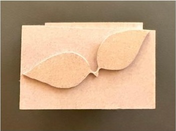
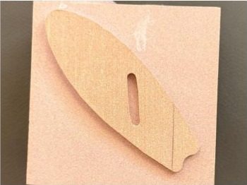

Class project
CNC Wood Engraving
- TypeClass project
- Dates2024
- StatusComplete

I modeled original designs in Fusion 360, generated the CAM toolpaths myself, and ran them on the school’s CNC router to engrave them into balsa blocks.
What it is and why I did it
A class project to take a design from a CAD model to a physical part on real machine tooling.
My role
I created the designs, set up the CAM, and ran the job on the machine.
Process
- Modeled each design in Fusion 360.
- Generated the CAM toolpaths, setting depth of cut, feed, and cut parameters for balsa.
- Fixtured the balsa block on the CNC router.
- Ran the toolpaths and the machine engraved the design into the block.
Results and what’s next
Three finished pieces: a twin-leaf relief, a slotted blade profile, and a script monogram.
Gallery

